Authoring Techniques for Accessible Office Documents: Adobe InDesign CS6
Quick Reference
- Usage Notes
- Technique 1. Use Accessible Templates
- Technique 2. Specify Document Language
- Technique 3. Creating Artifact for Object
- Technique 4. Alternative Text for Image
- Technique 5. Creating Paragraph Style
- Technique 6. Creating Accessible Table
- Technique 7. Tagging Items
- Technique 8. Creating Table of Contents
- Technique 9. Make Content Easier to See
- Technique 10. Make Content Easier to Understand
- Accessibility Checker
- Setting PDF files (Acrobat 10 pro)
- Accessibility Help
- References and Resources
- Acknowledgments
Usage Notes
At the time of testing (March, 22, 2013), InDesign CS6 provides a set of accessibility features that is sufficient to enable the production of accessible digital documents.
What is "InDesign"?
You should use the technique below when you are using InDesign to create documents that are:
- Intended to be used by people (i.e., not computer code),
- Text and Image based (intended for design)
- Fully printable and can be digitized
- Creative design (layout e.g. books, packages, poster, interactive web)
Note: InDesign is best for print design, but there are also options of doing web and digital publishing. If you are creating forms, web pages, applications, or other dynamic and/or interactive content, the techniques below will be useful, but consult the W3C-WAI Web Content Accessibility Guidelines (WCAG 2.0) should also be consulted, because these are specifically designed to provide guidance for highly dynamic and/or interactive content.
File Formats
The default file format for InDesign is (.indd)
In addition, InDesign offers many other web format saving options. Most of these have not been checked for accessibility.
- PDF (print and interactive)
- SWF (for interactive)
- HTML
Document Conventions
We have tried to formulate these techniques so that they are useful to all authors, regardless if they use a mouse. However, there are several instances where mouse-only language is used for clarity purposes . Below are the mouse-only terms and their keyboard alternatives:
- *Right-click: To right-click with the keyboard, select the object using the Shift+Arrow keys and then press either (1) the “Right-Click” key (some keyboard have this to the right of the spacebar) or Shift+F10.
Disclaimer and Testing Details:
Following these techniques will increase the accessibility of your documents, but it does not guarantee accessibility to any specific disability groups. In cases where more certainty is required, it is recommended that you test the documents with end users with disabilities, including screen reader users.
Technique 1. Use Accessible Templates
InDesign starts with a simple blank page that can be adjust to any size. There are no build-in templates for InDesign. However, you can create your own templates from scratch or download already made templates from Adobe.
Because templates provide the starting-point for documents, accessibility is critical. If you are unsure whether a template is accessible, you should check the document in Acrobat Pro. To export file check Accessibility Checker
To create an accessible template
- Select file > New > New Document
- Set the Intent (print, web, digital publishing) and Page Size
- Uncheck the Facing Pages box if your document is NOT intended to be in book format
- Select OK
Keyboard shortcut: Ctrl + N (on Window) and Cmd + N (on Mac)
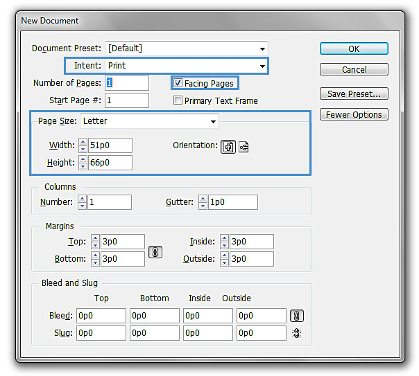
To Saving File as a Template
- Select file > Save
- Insert file name and under Save as type select CS6 InDesign template
- Select Save
Keyboard shortcut: Ctrl + S (on Window) and Cmd + S (on Mac)
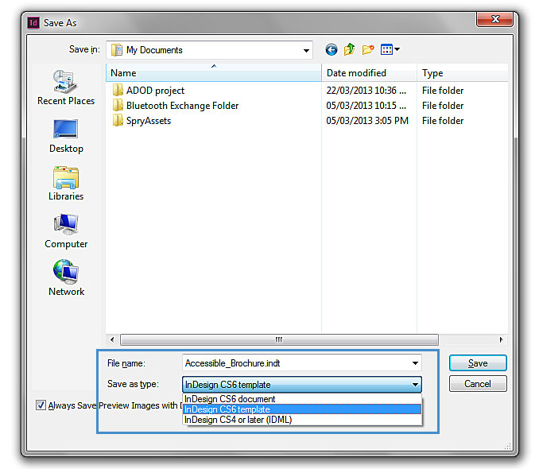
Technique 2. Specify Document Language
The language setting in InDesign will only set language within the program, it will not export the selected language to a PDF file. To specify the document language in the pdf file follow the Acrobat Pro file
Technique 3. Creating
Artifact for Objects
There are two options to create artifact.Option one uses Object Export Options Dialog box where the user select the images in the document individually and add artifact. Option two uses Tag pane where the users individually select the object and add the required tagging.
Artifact Option 1
- Select the image or object
- Select Object > Object Export Options

- Select Tagged PDF > Apply Tag
- Choose either Artifact or Based on Object
- Select Done
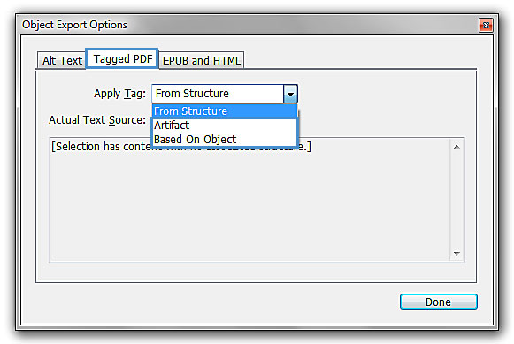
Artifact Option 2
- Select the object or artifact
- In Tag pane select
Artifact
Note: to view Tags Panel: (Window > Utilities > Tags)
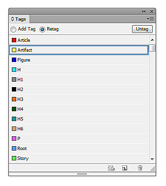
Note: for more detail information on tagging and structure pane see Technique 7.
Technique 4. Alternative Text for Image
When using images or other graphical objects, such as graphs, shapes and backgrounds it is important to ensure that the information you intend to convey by the image is also conveyed to people who cannot see the image. This can be accomplished by adding concise alternative text to each image.
Tips for Writing Alternative Text
- Try to answer the question “what information is the image conveying?”
- If the image does not convey any useful information, leave the alternative text blank and create an artifact (e.g. Background images should generally have no alt text, other decorative images should only have alt text if they form a crucial part of the content, message, and purpose of the document)
- If the image contains meaningful text, ensure all of the text is replicated
- For logos, the alternative text should be the organization's name
- For groups of logos, one logo can be chosen to represent the group
- Sometimes text is included as part of a logo or footer image (e.g. the image might contain a phone number), this text should be set as the alternative text of the image
- Alternative text should be fairly short, usually a sentence or less and rarely more than two sentences
- Test by having others review the document with the images replaced by the alternative text
Tips for writing longer descriptions
- Long descriptions should be used when text alternatives (see above) are insufficient to answer the question "what information is the image conveying?"
- In some situations, the information being conveyed will be how an image looks (e.g., an artwork, architectural detail, etc.). In these cases, try to describe the image without making too many of your own assumptions.
- One approach is to imagine you are describing the image to a person over the phone
- Ensure that you still provide concise alternative text to help readers decide if they are interested in the longer description
Alternative Text (Option 1)
There are two options to add Alternative Text to images Option one uses Object Export Options Dialog box where the user select the images in the document individually and add the alternative text. Option two uses Structure panel that create attribute to individual images.
- Select the image or object
- Select Object > Object Export Options
To add alternative text to images
- Select Alt Text > Alt Text Source drop down menu
- Choose Custom
- Type the description in the box below
- Select Done
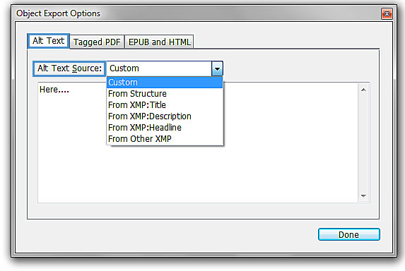
Alternative Text (Option 2) - Using Structure Panel
To add alternative text to images
- Structure Panel (View > Structure > Show Structure)
- Select the figure
- Select
- Select New Attribute
- Insert Alt under Name(must be capital "A" and lowercase "lt" to be valid)
- Place the descriptions under Value
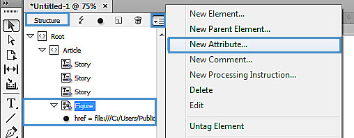
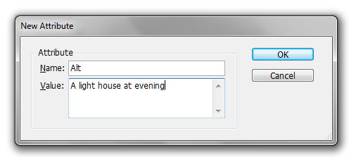
Technique 5. Creating Paragraph Style
Any documents that are longer than a few paragraphs require structuring to make them more straightforward for readers to understand. Creating Paragraph style will set headings and style for the document. It will also help in creating Table of Contents. The structural elements that order and levels provide a meaningful sequence to users of assistive technologies.
-
Select Paragraph Styles (in typography workspace)
- Select
- Select New Paragraph Style...
- Select General > Style Name and insert a title for the style (e.g. header, body text, caption .etc)
- Select Basic Character Formats located in the left side pane
- Choose the font, font style and the size
Keyboard shortcut: F11 (on window) Cmd + F11 (on Mac)
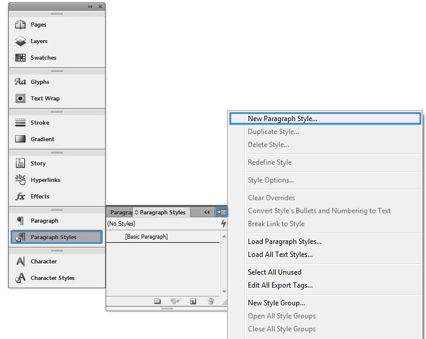
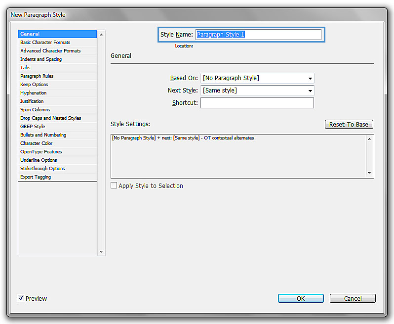
Technique 6. Creating Accessible Table
When using tables, it is important to ensure that they are clear and appropriately structured. This helps all users to better understand the information in the table and allows assistive technologies (e.g., screen readers) to provide context so that the information within the table can be conveyed in a meaningful way.
Tips for tables
- Only use tables for tabular information, not for formatting, such as to position columns.
- Use "real tables" rather than text formatted to look like tables using the TAB key or space bar. These will not be recognized by assistive technology.
- Keep tables simple by avoiding merged cells and dividing complex data sets into separate smaller tables, where possible.
- If tables split across pages, set the header to show at the top of each page. Also set the table to break between rows instead of in the middle of rows.
- Create a text summary of the essential table contents. Any abbreviations used should be explained in the summary.
- Table captions or descriptions should answer the question "what is the table's purpose and how is it organized?" (e.g., "A sample order form with separate columns for the item name, price and quantity").
- Table header cell labels should be concise and clear.
To create tables
1. Create a text box > Table > Insert Table
keyboard short cut: Ctrl + Alt + Shift + T (on window), Cmd + Shift + Option + T (on Mac)
2. Insert Body Rows and Columns
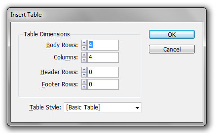
3. Select OK
To convert Text (with tabs) to a Table
If you have created text with tabs. To convert the text to a table:
- Select all the text
- Table > Convert To Table
- Column Separator > Tab
- Select OK
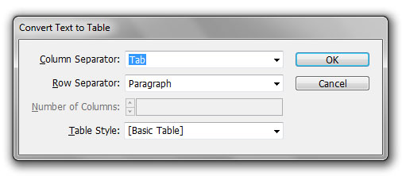
Removing Table Lines
- Place the Type cursor on top of the table until the cursor changes to an upside down black cursor
- Click and drag the cursor to select all of the chart (or part of the chart)
- In the top navigation. It’ll show a line box where you can choose which side you would like to remove the line from.
- Once selected. Click on the "None" outline button
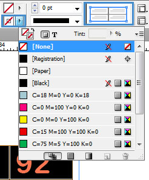
Technique 7. Tagging Items
Tagging items will help the assistive technologies (e.g., screen readers) to locate the logical order of the heading assign.
Also when exporting the document into a PDF the tagging will automatically be imbedded, therefore the user does not need to apply tagging in Acrobat.
To quickly tag the items in the file
Note: This does not tag all content correctly. To correctly tag all content, you would have to assign the tags manually (see To Assign Tags Manually)
- Structure Panel (View > Structure > Show Structure)
keyboard shortcut Alt + Ctrl + 1 (on Window), Cmd + Option + 1 (on Mac)
- In the structure pane click the three line button and choose Add Untagged Items
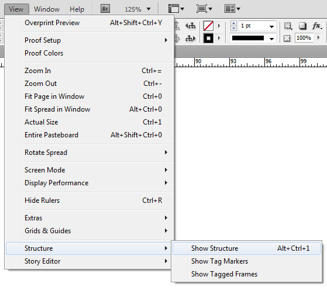
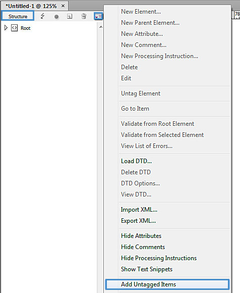
To view which items have been tagged
- View > Structure > Show Tagged Frames
- The boxes will be coloured according to the tagging in the Tags Panel. (Window > Utilities > Tags)
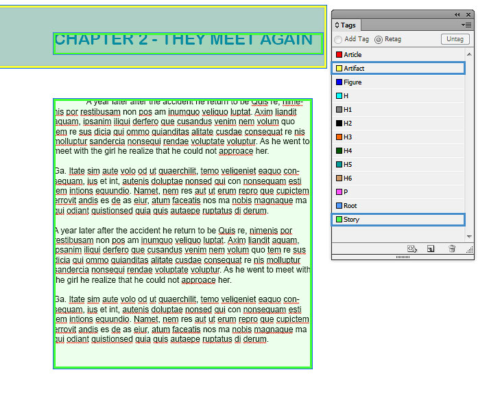
Note: you must be in preview mode (keyboard shortcut W) to view the tagged items.
To Assign Tags Manually (and correctly)
- Tag pane (Window > Utilities > Tags)
- Click > Map Style to Tags...
- Select the style and change [Not Mapped] to a heading title (e.g. H, H1, H2 etc)
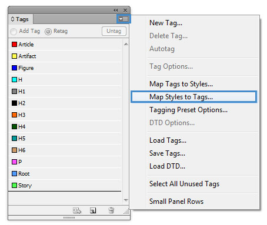
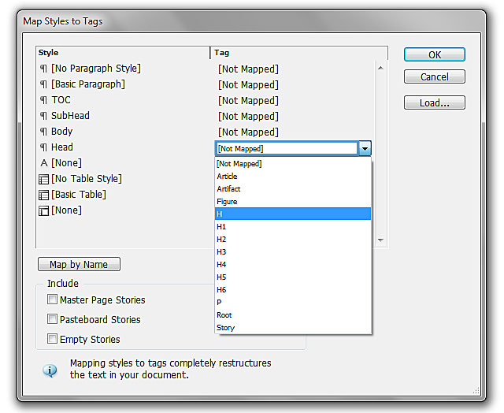
Option 2 Export Tagging (manually assign tagging)
- Double click on the paragraph style (e.g. "heading")
- In the dialog box Paragraph Style Options choose Export tagging
- Under PDF > Tag: select the appropriate heading title (e.g. style name: heading & Tag: H)
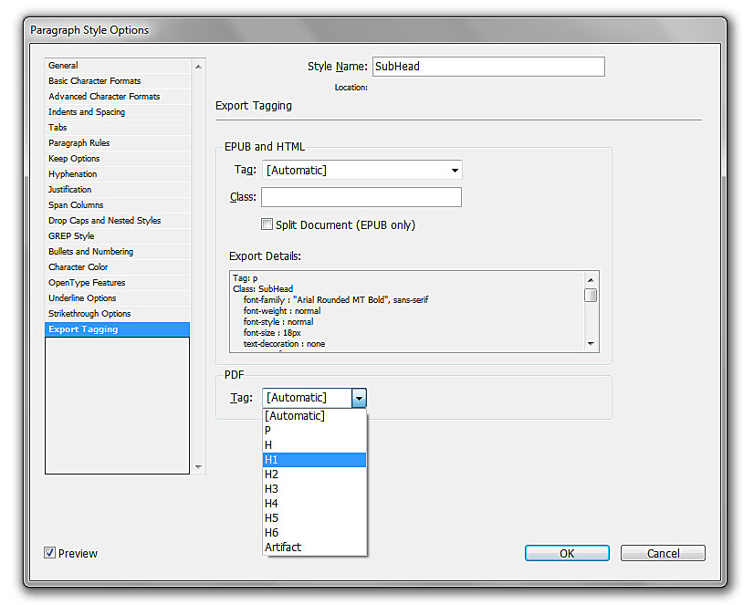
Note: To make the reading order and tags easier to manage make thread text boxes. If possible make one text box per page.
Technique 8. Creating Table of Contents
- Create a paragraph style (see Technique 5)
- For all the contents in the table of contents assign the title to the style "TOC"
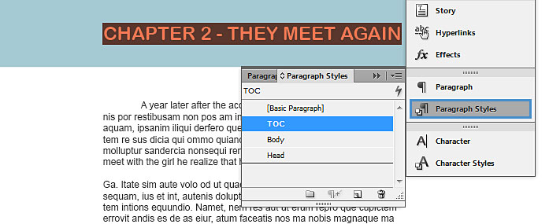
Optional: creating another style for the body of the table of content
once all the contents are in the style of "TOC"
- Select Layout > Table of Contents...
- Under Other Styles select the style
- Select the << Add button to transfer the style to Include Paragraph Styles:
- Drag the cursor to create a large box for the table of content.
Note: The table of contents will automatically create the title, contents and page numbers.
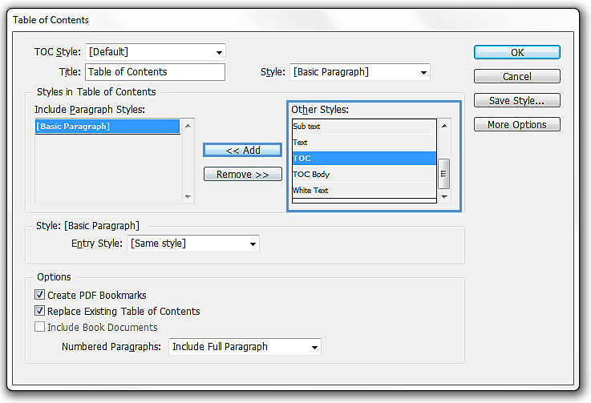
Optional: to change the body of the table of contents to a different style than the header of the table of contents. Select entry style and change same style to another style.
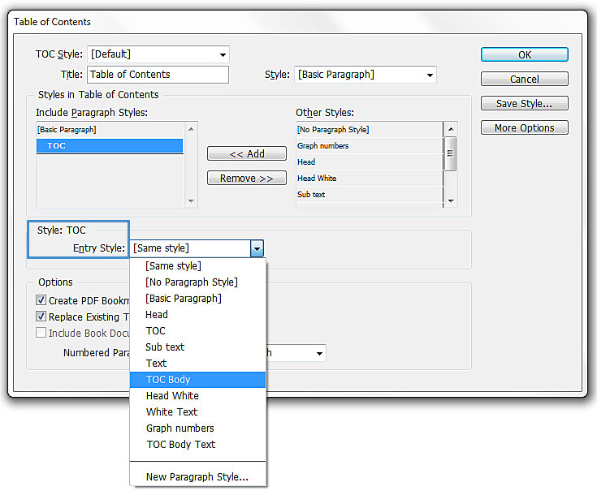
8.1 Columns
Use Columns feature for placing text in columns instead of creating multiple text boxes.
8.2 Use Page Numberin
Numbering the pages of your document helps those reading and editing your document effectively navigate and reference its content. For users of assistive technologies, it provides a valuable point of reference within the document.
8.3 Naming PDF before exporting
- File> File Info
keyboard shortcut: Ctrl + Alt + Shift + I (on Window), Cmd + Shift + Option + I (on Mac)
- Descriptions > Document title: insert the file title
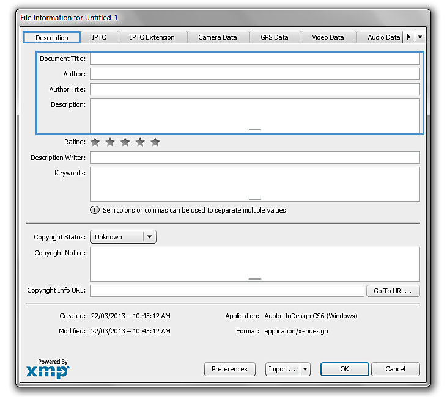
Note: you can also fill in the author's name and description.
Technique 9. Make Content Easier to See
Here are some other things to keep in mind:
9.1 Format of Text
When formatting text, especially when the text is likely to printed, try to:
- Use font sizes between 12 and 15 points for body text.
- Use fonts of normal weight, rather than bold or light weight fonts. If you do choose to use bold fonts for emphasis, use them sparingly.
- Use standard fonts with clear spacing and easily recognized upper and lower case characters. Sans serif fonts (e.g., Arial, Verdana) may sometimes be easier to read than serif fonts (e.g., Times New Roman, Garamond).
- Avoid large amounts of text set all in caps, italic or underlined.
- Use normal or expanded character spacing, rather than condensed spacing.
- Avoid animated or scrolling text.
But can’t users just zoom in? Because printing is an important aspect of many workflows and changing font sizes directly will change documents details such the pagination, the layout of tables, etc., it is best practice to always format text for a reasonable degree of accessibility.
9.2 Use Sufficient Contrast
The visual presentation of text and images of text should have a contrast ration of at least 4.5:1. To help you determine the contrast, here are some examples on a white background:
- Very good contrast (Foreground=black, Background=white, Ratio=21:1)
- Acceptable contrast (Foreground=#767676, Background=white, Ratio=4.54:1)
- Unacceptable contrast (Foreground=#AAAAAA, Background=white, Ratio=2.32:1)
Also, always use a single solid color for a text background rather than a pattern.
In order to determine whether the colors in your document have sufficient contrast, you can consult an online contrast checker, such as:
- Juicy Studio: Luminosity Color Contrast Ratio Analyzer
- Joe Dolson Color Contrast Spectrum Tester
- Joe Dolson Color Contrast Comparison
9.3 Avoid Using Color Alone
Color should not be used as the only visual means of conveying information, indicating an action, prompting a response, or distinguishing a visual element. In order to spot where color might be the only visual means of conveying information, you can create a screenshot of the document and then view it with online gray-scale converting tools, such as:
9.4 Avoid Relying on Sensory Characteristics
The instructions provided for understanding and operating content should not rely solely on sensory characteristics such as the color or shape of content elements. Here are two examples:
- Do not track changes by simply changing the color of text you have edited and noting the color. Instead use Word 2010’s "Track Changes" feature to track changes.
- Do not distinguish between images by referring to their appearance (e.g. "the bigger one"). Instead, label each image with a figure number and use that for references.
9.5 Avoid Using Images of Text
Before you use an image to control the presentation of text (e.g., to ensure a certain font or color combination), consider whether you can achieve the same result by styling "real text". If this is not possible, as with logos containing stylized text, make sure to provide alternative text for the image following the techniques noted above.
Technique 10. Make Content Easier to Understand
Write Clearly
By taking the time to design your content in a consistent way, it will be easier to access, navigate and interpret for all users:
- Whenever possible, write clearly with short sentences.
- Introduce acronyms and spell out abbreviations.
- Avoid making the document too "busy" by using lots of whitespace and by avoiding too many different colors, fonts and images.
- If content is repeated on multiple pages within a document or within a set of documents (e.g., headings, footings, etc.), it should occur consistently each time it is repeated.
Accessibility Checker
To check for accessibility the InDesign file must be exported to a PDF and viewed in Acrobat Pro.
- File > Export
keyboard shortcut: Ctrl + E (on Window), Cmd + E (on Mac)
- Save as: PDF (Interactive or Print)
- Select Save
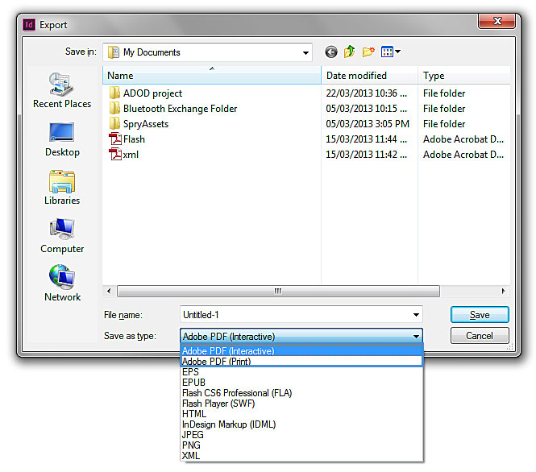
Setting PDF files (Acrobat 10 pro)
In Acrobat 10 Pro there is a special accessibility Action Wizard for InDesign CS6 where the user can follow to make the file accessible.
- To Follow the Action Wizard in Acrobat 10: select Tools > Action Wizard > InDesign (CS6) Accessibility Touch up.
Accessibility Help
If you are interested in what features are provided to make using InDesign CS6 more accessible to users, documentation is provided in the Help button or the search bar :
You can also go to http://www.adobe.com/accessibility/products/indesign/
References and Resources
Acknowledgments
Authors: Vellicia Christanto, Jan Richards
This document was produced as part of the Accessible Digital Office Document (ADOD) Project (http://inconclusiveness/accessible-office-documents).
This project has been developed by the Inclusive Design Research Centre, OCAD University as part of an EnAbling Change Partnership project with the Government of Ontario and UNESCO (United Nations Educational, Scientific and Cultural Organization).


Authoring Techniques for Accessible Documents: Indesign CS6 is licensed under a Creative Commons Attribution-ShareAlike 3.0 Unported License